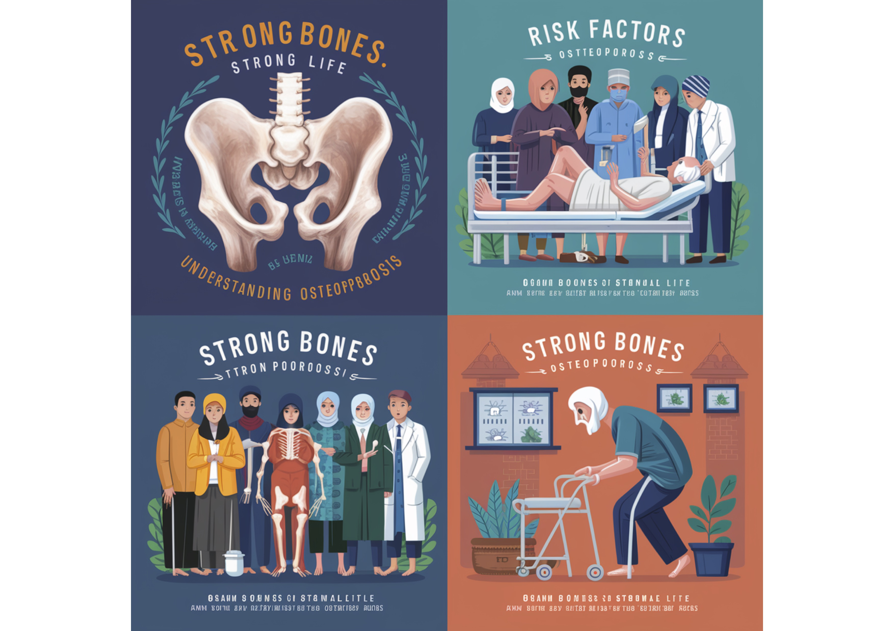

Strong Bones, Strong Life: Understanding Osteoporosis

What is Osteoporosis?
Osteoporosis is a condition that makes your bones weak and easy to break. It’s like your bones become hollow and fragile.
Who is at risk?
- People over 50 years old
- Women, especially after menopause
- People who have broken a bone before
- Those with poor diet (low calcium and vitamin D)
- Inactive people, smokers, or those who are very thin
- People with certain diseases like kidney problems or diabetes
- Those taking some medications, like steroids for asthma or arthritis
What happens if you have osteoporosis?
- Back pain
- Getting shorter over time
- Bones that break easily, even from small falls
- Hunched back
- Hip fractures, which can be very serious for older people
How to keep your bones healthy:
- Eat good foods:
- Milk, yogurt, cheese for calcium
- Fish, eggs, and sunlight for vitamin D
- Plenty of protein
- Live healthy:
- Exercise regularly
- Don’t smoke
- Keep a healthy weight
- Take calcium and vitamin D pills if your doctor says to
- Get your bone strength (t-score) checked with the Taiwan Osteoporosis Machine (TOM) at Hargeisa Group Hospital